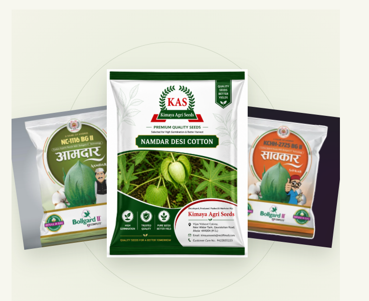

01 / DESI COTTONView variety ↗

Namdar Desi Cotton
A desi cotton option for farmers, supported by local guidance and cultivation information.
 Kimaya Agriseeds
Kimaya AgriseedsResearch-Driven Cotton Seeds
पहिले पेरून पाहा, मग विश्वास करा!
Research-led cotton seeds for Maharashtra’s farms. Explore our desi and BG-II varieties, developed with farmer needs and local conditions in mind.

OUR COTTON VARIETIES ✳THE KIMAYA WAY
Every farm has its own rhythm. We believe good seed choices should begin with listening—to the land, to the season, and to the people who know them best.
Get to know us ↗OUR COTTON CATALOGUE
Explore our current cotton seed range. More varieties are in development and will be added here as they become available.
A desi cotton option for farmers, supported by local guidance and cultivation information.
LET’S GROW SOMETHING GOOD